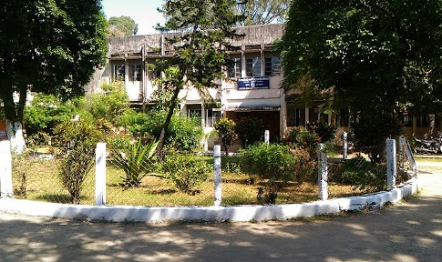

Governing Council
The original materials include this heading under About Us, with content reserved for future expansion.

Cotton Collegiate Govt. H.S. School
The history of Cotton Collegiate Govt. H.S. School begins with the wider growth of secondary education in Assam and continues through generations of academic excellence in Guwahati.
In Assam, secondary education was launched in 1834. Capt. Francis Jenkins, commissioner of Assam from 1834 to 1861, recommended active measures for Assamese youth education and suggested English schools at major sadar stations. In 1835, the Government of India approved the school, which opened with 58 students under Headmaster Mr. Singer.
The school grew steadily through the 1840s and 1860s, became Gauhati Seminary, and was officially raised to collegiate status in 1865, making it the first school in northeastern India to achieve that distinction. It was later renamed Cotton Collegiate School in the early twentieth century and continues today as Cotton Collegiate Govt. H.S. School.
The original materials include this heading under About Us, with content reserved for future expansion.
The original materials include this heading under About Us, with content reserved for future expansion.
The original materials include this heading under About Us, with content reserved for future expansion.
Structured alumni and student interaction supports career guidance, entrepreneurship support, and mentoring.
The original materials include this heading under About Us, with content reserved for future expansion.
Regional chapters extend the association in metropolitan cities and work in consultation with the Guwahati office.